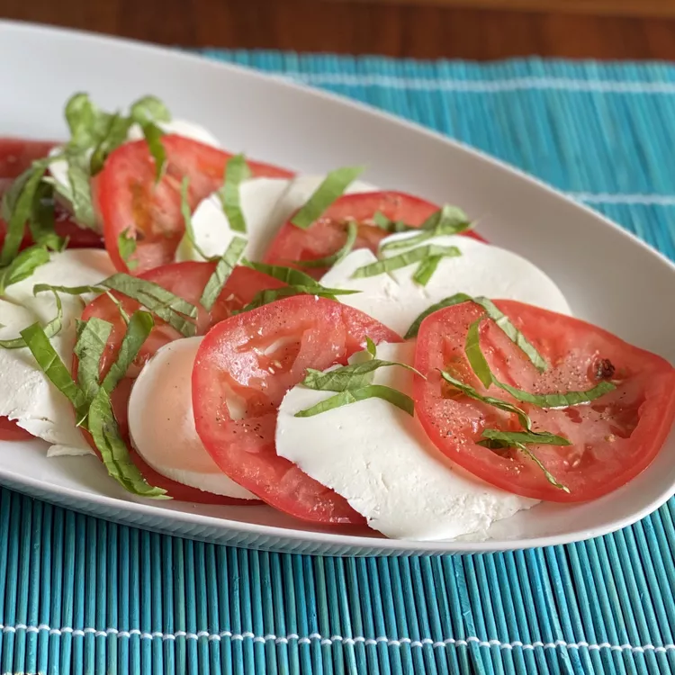

Mozzarella Salad

Description
No cooking needed! This fresh and tasty dish will be ready in minutes but still and a luxury feel to your meal!
Takes: less than 15 minutes
Ingredients
- 4 tomatoes
- olive oil
- ground salt & black pepper
- 1 teaspoon salt
- 10 ounces mozzarella
- fresh basil
Instructions
- Slice tomatos and mozzarella
- Chop basil (optional)
- Layer tomatoes and mozzarella on a plate
- Season with salt and pepper
- Garnish with basil
- Drizzle olive oil over finnished dish
This is a recipie inspired by:
All Recipies